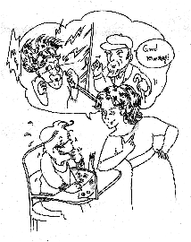

| Maître raconte des histoires drôles |
Le 3 octobre 1999, ( Initialement en chinois ) |
 Un maître d'école demande à l'un de ses élèves : " Crois-tu à la vie après la mort ? " Le garçon répond : " Oui, j'y crois ! " Et le maître répond : " Bien, c'est une chance que tu y crois, parce que ton grand-père est venu à l'école pour me voir aujourd'hui, alors qu'hier tu m'as dit avoir besoin d'un jour de congé pour assister à son enterrement ! "